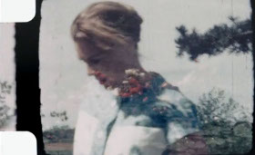

Motu Maeva
Maureen Fazendeiro
Frankreich / Portugal 2014
43 min – HD – French OV Engl ST
DoP: Maureen Fazendeiro, Isabel Pagliai – S: François Abdelnour, Jules Valeur, Miguel Martins – E: Catherine Libert – With Sonja André
German Premiere
Grand Prix Europe - Brive FF
A journey through the memories of Sonja André, an adventurer from the 20th century who lives in a shelter she built herself on the island of Motu Maeva. Without following a chronological order or a specific route, her memories take shape bringing back major events and small anecdotes, a trip, or a map, following an unceasing movement. From Chad to Indochina to Tahiti; then a short break, a moment of peace, a song, and then off again to a place and a story that took place a few years later, or maybe before. A total freedom, only images captured in Super-8 film between the 1950s and 1970s, and the voice-over of a woman whose civil status and secret wounds we’ll never fully know.
wednesday 14 oct 6.30 pm werkstattkino
Maureen Fazendeiro born in 1989. After her studies on the relationship between dance and cinema, Maureen Fazendeiro lives and works between Paris and Lisbon, between his film projects and distribution as well as at publishing house Independencia.